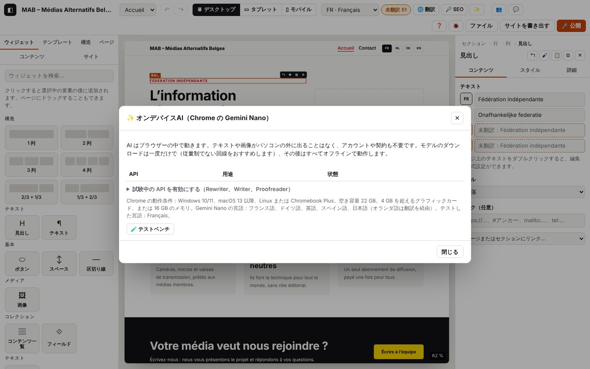

7. オンデバイスAI（Chrome の Gemini Nano）

このページの内容
以下のログ抜粋はフランス語で記録したものです。コードとレベルはどの言語でも同じです（実際のログのメッセージは表示言語で出ます）。
Atelier は Chrome に組み込まれた AI（Gemini Nano）を使います：書き換え、誤りの校正、Google 向けの説明とタイトルの提案、キーワードの候補、画像の代替テキスト。処理はすべてあなたのパソコンの中で行われます。アカウントも契約も不要で、サーバーには何も送られません。各タスクは、Chrome に専用の API（Rewriter、Proofreader、Summarizer）があればそれを使い、なければ JSON 形式の応答を指定した Prompt API を使います。Gemini Nano が書ける言語はフランス語、ドイツ語、英語、スペイン語、日本語です。オランダ語の場合、Atelier はフランス語で書いてから Chrome の翻訳機能で翻訳します（第 5 章）。
ログのドメイン：ai.* — 各 API の状態（ai.availability、ai.status）、ダウンロード（ai.download.*、ai.progress）、セッション（ai.session.*）、そしてタスクごとの流れ：ai.rewrite、ai.proofread、ai.description、ai.title、ai.keywords、ai.alt、ai.link。オランダ語への翻訳では translate.model.* も記録されます（第 5 章）。
タスクの流れの読み方
どのタスクも、名前を頭に付けた同じステップを記録します（ai.rewrite.call、ai.title.call…）。
| ステップ | レベル | 内容 |
|---|---|---|
….start（例：ai.rewrite.start） | INFO | タスク、求められた言語（lang）、実際に書く言語（gen）、使う予定の API（api：rewriter、proofreader、summarizer または prompt）、テキストの長さと抜粋（最大 60 文字）、source：chrome または test |
ai.rewrite.fallback（または ai.proofread.fallback、ai.description.fallback） | WARN | 専用の API が使えないため Prompt API で代用。その API を有効にする Chrome の設定（flag）も示す |
ai.description.via-translation | INFO | Gemini Nano が対応していない言語：gen で書いてから翻訳 |
ai.title.call | DEBUG | API の呼び出し：どの API か（api）、言語、設定（tone、length、type、schema = 求めた JSON のフィールド、images、指示文 system の長さ）、入力の長さ inLen |
ai.title.reply | DEBUG | その応答：所要時間 ms、長さ outLen、抜粋 excerpt（60 文字） |
ai.description.call-fail | WARN | 呼び出しでエラーが発生：名前（error.name）、メッセージ、所要時間、考えられる原因（hint） |
ai.title.unreadable | WARN | Prompt API が求めた JSON を返さなかった（応答の抜粋） |
ai.title.schema-mismatch | WARN | JSON は読めるが、期待したフィールドがない（missing） |
ai.alt.cleaned | DEBUG | 提案を整えた（引用符、タグ、「Image de…」（…の画像）、重複したキーワード）：整える前／後 |
ai.description.clamped | WARN | 提案を最大の長さで切った（説明 160、タイトル 60、代替テキスト 125、リンク 60） |
ai.description.warning | WARN | 結果についての注意（「元のテキストより短くなっていない」「説明が短い」） |
ai.description.rejected | WARN | 整えた結果、提案が空になった：不採用 |
ai.description.no-translator | WARN | 求められた言語への翻訳機能がない |
ai.title.absent | WARN | AI がない（Prompt API がない、または画像を読めない）：タスクは実行されない |
ai.rewrite.refused-lang | WARN | この言語ではタスクを実行できない（書き換え、校正、リンクのテキストには Gemini Nano の対応言語が必要） |
ai.rewrite.refused | WARN | 呼び出し前のそのほかの拒否（書き換えるテキストがない、不明なモード） |
….ok（例：ai.title.ok） | INFO | 提案の準備完了：実際に使った API（via）、代用したか（fallback）、翻訳したか（translated）、呼び出し回数（calls）、長さと抜粋 |
….cancel（例：ai.rewrite.cancel） | INFO | 「Tâche non lancée」（タスクを実行しませんでした）：想定どおりの拒否で、モデルは一度も呼ばれていない |
….fail（例：ai.title.fail） | ERROR | 失敗：reason = unreadable（読み取れない応答）、api（API の例外）、empty（提案なし）、no-translator、translator（翻訳に失敗）、other |
本物の Chrome を使っているときは、call と reply の間に ai.session.* と ai.progress の行（Chrome のセッションの作成、ダウンロード）が入ります。
7.1 API の状態を確認し、モデルをダウンロードする
目的：この Chrome で何ができるかを知り、足りないモデルをダウンロードすること。
手順
- 上部のバーの「✨」ボタン（または Ctrl+K で「オンデバイスAI」）を押すと、「✨ オンデバイスAI（Chrome の Gemini Nano）」ウィンドウが開きます。
- 表に各 API の状態が出ます：「✓ 準備完了」「⇩ 要ダウンロード」「… ダウンロード中」「✗ この環境では利用不可」「— このブラウザーにはありません」。
- 「要ダウンロード」の API の横にある「ダウンロード」を押します（一度だけ。定額制の回線がおすすめです）。
画面の表示：状態が「✓ 準備完了」に変わります。ダウンロード中は「Rewriter をダウンロード中：50%」と表示されます。
想定されるログ（journaux/ia-etat.log、テスト用プロバイダー）
技術的な詳細：想定されるログ
14:29:42.072 +0.92s INFO ai.dialog Fenêtre ✨ IA locale {"lang":"fr","siteLang":"fr","source":"test"}
14:29:42.073 +0.92s DEBUG ai.availability Prompt API (Gemini Nano) : available (fournisseur de test) {"api":"prompt","lang":"fr","state":"available","source":"test"}
14:29:42.073 +0.92s DEBUG ai.availability Prompt API – images : available (fournisseur de test) {"api":"multimodal","lang":"fr","state":"available","source":"test"}
14:29:42.074 +0.92s DEBUG ai.availability Summarizer : available (fournisseur de test) {"api":"summarizer","lang":"fr","state":"available","source":"test"}
14:29:42.074 +0.92s DEBUG ai.availability Rewriter : downloadable (fournisseur de test) {"api":"rewriter","lang":"fr","state":"downloadable","source":"test"}
14:29:42.074 +0.92s DEBUG ai.availability Writer : unavailable (fournisseur de test) {"api":"writer","lang":"fr","state":"unavailable","source":"test"}
14:29:42.074 +0.92s DEBUG ai.availability Proofreader : available (fournisseur de test) {"api":"proofreader","lang":"fr","state":"available","source":"test"}
14:29:42.074 +0.92s DEBUG ai.availability Translator : available (fournisseur de test) {"api":"translator","lang":"fr","state":"available","source":"test"}
14:29:42.074 +0.92s DEBUG ai.availability Language Detector : available (fournisseur de test) {"api":"detector","lang":"fr","state":"available","source":"test"}
14:29:42.074 +0.92s INFO ai.status IA locale : prêt → prompt, multimodal, summarizer, proofreader, translator, detector (2 ms) {"lang":"fr","ms":2,"source":"test","prompt":"available","multimodal":"available","summarizer":"available","rewriter":"downloadable","writer":"unavailable","proofreader":"…
14:29:42.128 +0.97s INFO ai.download.start [ai.download#1] Téléchargement du modèle Rewriter {"api":"rewriter","lang":"fr","source":"test"}
14:29:42.129 +0.97s INFO ai.download.ok [ai.download#1 · 1 ms] Rewriter prêt (fournisseur de test)
14:29:42.129 +0.97s DEBUG ai.availability Rewriter : available (fournisseur de test) {"api":"rewriter","lang":"fr","state":"available","source":"test"}
14:29:42.129 +0.97s INFO ai.status IA locale : prêt → prompt, multimodal, summarizer, rewriter, proofreader, translator, detector (0 ms) {"lang":"fr","ms":0,"source":"test","prompt":"available","multimodal":"available","summarizer":"available","rewriter":"available","writer":"unavailable","proofre…確認ポイント：API ごとに ai.availability の行が 1 つずつ（state：available、downloadable、downloading、unavailable または absent）、続いてすべてをまとめた ai.status（「prêt → …」（準備完了 → …））。「ダウンロード」ボタンについては ai.download の流れ。前回の確認から状態が変わっていない API は TRACE になります（タスクのたびに状態を確認し直すため）。
バリエーション
| 状況 | 変わること | ログ |
|---|---|---|
| 本物の Chrome | 指定したオプションと、各確認にかかった時間 | ai.availability に options と ms。ai.params（DEBUG、1 回だけ）：Prompt API の既定の topK と temperature（journaux/ia-chrome-etat.log） |
| ブラウザーに API がない（例：設定していない Writer） | 「— このブラウザーにはありません」 | ai.availability {"state":"absent","global":"Writer","flag":"chrome://flags/#writer-api"} |
| 本物の Chrome でダウンロード | 進捗 | ai.progress（DEBUG、10% ごと）、ai.session.create（DEBUG、所要時間と設定）、ai.download.ok |
| Chrome がすでに裏でモデルをダウンロードしている（「… ダウンロード中」） | 進捗を表示 ボタン：行の中にパーセントが表示され（「… 37%」）、その後「準備完了」になる | ai.download-follow（INFO）、ai.progress、ai.download.ok |
Chrome のダウンロードが進まない（chrome://on-device-internals で 0% のまま） | 20 秒後に「… 0%（Chrome が進んでいません）」とアドバイスが表示される | ai.download-stalled（WARN）：ダウンロードは Chrome 側で行われます。chrome://on-device-internals（Model Status、Assets）、定額制の Wi-Fi 回線（スマートフォンのテザリングは不可）、Chrome を開いたままにしているかを確認するか、Chrome を再起動してください |
| Chrome のダウンロード中にウィンドウを開いたままにしている | 状態が自動で更新される（3 秒ごと） | ai.availability（DEBUG）、進行中のものがなくなると ai.download-done（INFO） |
| chrome://flags のアドレスを「コピー」 | 「コピーしました。アドレスバーに貼り付けてください。」 | ai.flag-copied（DEBUG）。クリップボードが拒否された場合：ai.flag-copy-fail（WARN）、アドレスが表示される |
エラー
| 状況 | 表示されるメッセージ | ログ | 対処 |
|---|---|---|---|
availability() でエラーが発生（対象外のデバイスなど） | 「✗ この環境では利用不可」 | ai.availability-fail（WARN）と error.name、hint | 7.7 を参照（ハードウェア、chrome://on-device-internals） |
| Chrome が 4 秒以内に応答しない | 「✗ この環境では利用不可」 | ai.availability-timeout（WARN） | Chrome を再起動し、chrome://on-device-internals を確認してください |
| ダウンロードを拒否：ユーザー操作が必要 | 「失敗：Requires a user gesture…」 | ai.session.fail（WARN）、続いて ai.download.fail（ERROR）と hint「Chrome exige un clic…」（Chrome はクリックを必要としています…） | 「ダウンロード」をもう一度クリックしてください（クリックはあなた自身がする必要があります） |
| ボタンのそのほかの失敗 | 「失敗：…」 | エラーがまだ記録されていなければ ai.download-ui（WARN） | ログを送ってください |
技術的な詳細：想定されるログ
14:29:45.056 +3.90s WARN ai.availability-fail Proofreader : availability() a échoué (NotSupportedError) — considéré indisponible {"api":"proofreader","lang":"fr","ms":4,"options":{"expectedInputLanguages":["fr"]},"error":{"name":"NotSupportedError","message":"The device is not eligible for running…
…
14:29:45.057 +3.90s INFO ai.status IA locale : prêt → prompt, multimodal, translator (6 ms) {"lang":"fr","ms":6,"source":"chrome","writer":"absent","detector":"absent","prompt":"available","multimodal":"available","summarizer":"downloadable","rewriter":"downloadable","proofreader":"unavailable","t…
14:29:45.058 +3.90s DEBUG ai.params Réglages par défaut de la Prompt API {"topK":3,"maxTopK":128,"temperature":1,"maxTemperature":2}
14:29:45.111 +3.96s INFO ai.download.start [ai.download#2] Téléchargement du modèle Rewriter {"api":"rewriter","lang":"fr","source":"chrome"}
14:29:45.112 +3.96s WARN ai.session.fail Session Rewriter impossible : NotAllowedError — Requires a user gesture when availability is "downloading" or "downloadable". {"api":"rewriter","ms":0,"inputs":"fr","outputs":"fr","error":{"name":"NotAllowedError","message":"Requires a user gesture when ava…
14:29:45.113 +3.96s ERROR ai.download.fail [ai.download#2 · 2 ms] Téléchargement Rewriter impossible : NotAllowedError — Requires a user gesture when availability is "downloading" or "downloadable". {"api":"rewriter","hint":"Chrome exige un clic de la personne pour télécharger le modèle (geste requ…
14:29:45.113 +3.96s INFO ai.status IA locale : prêt → prompt, multimodal, translator (0 ms) {"lang":"fr","ms":0,"source":"chrome","writer":"absent","detector":"absent","prompt":"available","multimodal":"available","summarizer":"downloadable","rewriter":"downloadable","proofreader":"unavailable","t…
14:29:45.161 +4.00s INFO ai.download.start [ai.download#3] Téléchargement du modèle Rewriter {"api":"rewriter","lang":"fr","source":"chrome"}
14:29:45.171 +4.01s DEBUG ai.progress Téléchargement Rewriter : 50 % {"api":"rewriter","pct":50}
14:29:45.178 +4.02s DEBUG ai.progress Téléchargement Rewriter : 100 % {"api":"rewriter","pct":100}
14:29:45.184 +4.03s DEBUG ai.session.create Session Rewriter créée (22 ms) {"api":"rewriter","ms":22,"inputs":"fr","outputs":"fr"}
14:29:45.184 +4.03s INFO ai.download.ok [ai.download#3 · 23 ms] Rewriter prêt
14:29:45.185 +4.03s INFO ai.status IA locale : prêt → prompt, multimodal, translator (0 ms) {"lang":"fr","ms":0,"source":"chrome","writer":"absent","detector":"absent","prompt":"available","multimodal":"available","summarizer":"downloadable","rewriter":"downloadable","proofreader":"unavailable","t…7.2 テキストを書き換える
目的：段落を短く、やさしく、フォーマルに、親しみやすく、または少し長くすること。
手順
- ページのテキストをダブルクリックし、範囲を選択します（何も選択しなければ段落全体）。
- 書式バーの「✨」を押し、モード（「短く」…）を選びます。
- 提案が表示されたら「置き換え」か「キャンセル」を押します。
画面の表示：バーの下に提案が表示されます。「置き換え」を押すと、テキストに「要確認」の印が付きます。
想定されるログ — Rewriter を使用（journaux/ia-reformuler-rewriter.log）
技術的な詳細：想定されるログ
14:29:43.029 +1.87s DEBUG ai.provider Fournisseur d’IA de test (window.__atelierAI) {"source":"test","lang":"fr","has":{"prompt":true,"multimodal":true,"summarizer":true,"rewriter":true,"proofreader":true,"translator":true},"methods":["prompt","summarize","rewrite","proofread","translate"]}
14:29:43.031 +1.88s INFO ai.rewrite.start [ai.rewrite#2] IA locale : reformuler {"task":"rewrite","inLen":44,"excerpt":"Le MAB réunit les médias alternatifs belges.","mode":"formal","lang":"fr","gen":"fr","api":"rewriter","source":"test"}
14:29:43.031 +1.88s DEBUG ai.rewrite.call [ai.rewrite#2 · 0 ms] Appel Rewriter (fr) {"api":"rewriter","lang":"fr","tone":"more-formal","length":"as-is","inLen":44}
14:29:43.032 +1.88s DEBUG ai.rewrite.reply [ai.rewrite#2 · 1 ms] Réponse Rewriter : 44 car. en 1 ms {"api":"rewriter","ms":1,"outLen":44,"excerpt":"Le MAB réunit les médias alternatifs belges."}
14:29:43.032 +1.88s INFO ai.rewrite.ok [ai.rewrite#2 · 1 ms] Reformuler : proposition prête (Rewriter) {"via":"rewriter","fallback":false,"translated":false,"calls":1,"outLen":44,"excerpt":"Le MAB réunit les médias alternatifs belges."}確認ポイント：ai.provider（プロバイダーと、使える API has）、Chrome に送ったトーン（more-formal、more-casual、as-is）または長さ（shorter、longer、as-is）と "api":"rewriter" が付いた ai.rewrite.call、"via":"rewriter" が付いた ai.rewrite.ok。edit.ai-* の行（第 2 章）は書式バーの動作を示します。「置き換え」を押すと ai.mark（テキストに「要確認」の印）が加わります。
バリエーション
| 状況 | 変わること | ログ |
|---|---|---|
| Rewriter がない（設定していない Chrome） | Prompt API で同じ結果 | ai.rewrite.fallback（WARN）、"api":"prompt","schema":"text" が付いた ai.rewrite.call、"fallback":true が付いた ai.rewrite.ok（journaux/ia-reformuler-repli.log） |
| 「短く」なのに短くならない | 「提案は元のテキストより短くなっていません。」 | ai.rewrite.warning（WARN） |
技術的な詳細：想定されるログ
14:29:42.551 +1.40s INFO ai.rewrite.start [ai.rewrite#1] IA locale : reformuler {"task":"rewrite","inLen":161,"excerpt":"Le MAB réunit les médias alternatifs belges. Nous partageon…","mode":"shorter","lang":"fr","gen":"fr","api":"prompt","source":"test"}
14:29:42.552 +1.40s WARN ai.rewrite.fallback [ai.rewrite#1 · 1 ms] Rewriter non disponible : repli sur la Prompt API (schéma JSON) {"wanted":"rewriter","has":false,"flag":"chrome://flags/#rewriter-api"}
14:29:42.553 +1.40s DEBUG ai.rewrite.call [ai.rewrite#1 · 2 ms] Appel Prompt API (Gemini Nano) (fr) {"api":"prompt","lang":"fr","schema":"text","system":"253 car.","inLen":169}
14:29:42.553 +1.40s DEBUG ai.rewrite.reply [ai.rewrite#1 · 2 ms] Réponse Prompt API (Gemini Nano) : 55 car. en 1 ms {"api":"prompt","ms":1,"outLen":55,"excerpt":"{\"text\":\"Le MAB réunit les médias alternatifs belges.\"}"}
14:29:42.554 +1.40s INFO ai.rewrite.ok [ai.rewrite#1 · 3 ms] Reformuler : proposition prête (Prompt API) {"via":"prompt","fallback":true,"translated":false,"calls":1,"outLen":44,"excerpt":"Le MAB réunit les médias alternatifs belges."}
…
14:29:42.610 +1.45s DEBUG ai.mark Texte de l’IA appliqué et marqué « à relire » {"nodeId":"n_6t0n5u1i3w","field":"content","lang":"fr"}エラー
| 状況 | 表示されるメッセージ | ログ | 対処 |
|---|---|---|---|
| オランダ語のテキスト | 「書き換えはオランダ語ではまだ利用できません。Gemini Nano が対応しているのは…」 | ai.rewrite.refused-lang（WARN）、ai.rewrite.cancel（INFO）：呼び出しなし | フランス語で書き換えてから翻訳してください（第 5 章） |
| 選択範囲が空 | 「書き換えるテキストがありません。」 | ai.rewrite.refused（WARN）、ai.rewrite.cancel | テキストを選択してください |
| API でエラーが発生 | Chrome のメッセージ | ai.rewrite.call-fail（WARN）と hint、ai.rewrite.fail（ERROR）"reason":"api" | 7.7 を参照 |
| 提案が空 | 「AI から提案がありませんでした。もう一度お試しください。」 | ai.rewrite.rejected（WARN）、ai.rewrite.fail "reason":"empty" | もう一度試すか、もっと長い文で書き換えてください |
技術的な詳細：想定されるログ
14:29:44.925 +3.77s INFO ai.rewrite.start [ai.rewrite#3] IA locale : reformuler {"task":"rewrite","inLen":37,"excerpt":"Le MAB réunit les médias alternatifs.","mode":"shorter","lang":"nl","gen":"nl","api":"prompt","source":"test"}
14:29:44.925 +3.77s WARN ai.rewrite.refused-lang [ai.rewrite#3 · 0 ms] Refusé en nl : La reformulation n’est pas encore disponible en néerlandais : Gemini Nano ne parle que français, allemand, anglais, espagnol et japonais. {"lang":"nl","langs":["en","ja","es","de","fr"]}
14:29:44.925 +3.77s INFO ai.rewrite.cancel [ai.rewrite#3 · 0 ms] Tâche non lancée (aucun appel au modèle) {"task":"rewrite"}
14:29:44.925 +3.77s ERROR ui.toast Message affiché : La reformulation n’est pas encore disponible en néerlandais : Gemini Nano ne parle que français, allemand, anglais, espagnol et japonais. {"type":"error"}7.3 誤りを校正する
目的：文体を変えずに、つづり、文法、一致、句読点の誤りを見つけること。
手順：7.2 と同じように操作し、✨ メニューで「校正」を選びます。修正箇所が強調表示され、「置き換え」でその場所だけに反映されます。
想定されるログ — Proofreader を使用（journaux/ia-corriger.log）
技術的な詳細：想定されるログ
14:29:43.816 +2.66s INFO ai.proofread.start [ai.proofread#1] IA locale : corriger les fautes {"task":"proofread","inLen":66,"excerpt":"Le MAB réunit les médias alternatifs belges. Nous partageon…","lang":"fr","gen":"fr","api":"proofreader","source":"test"}
14:29:43.816 +2.66s DEBUG ai.proofread.call [ai.proofread#1 · 0 ms] Appel Proofreader (fr) {"api":"proofreader","lang":"fr","inLen":66}
14:29:43.817 +2.66s DEBUG ai.proofread.reply [ai.proofread#1 · 1 ms] Réponse Proofreader : 165 car. en 1 ms {"api":"proofreader","ms":1,"outLen":165,"excerpt":"{\"correctedInput\":\"Le MAB réunit les médias alternatifs bel…"}
14:29:43.817 +2.66s INFO ai.proofread.ok [ai.proofread#1 · 1 ms] Corriger : proposition prête (Proofreader) {"via":"proofreader","fallback":false,"translated":false,"calls":1,"corrections":1,"outLen":76}
…
14:29:43.891 +2.73s DEBUG ai.mark Texte de l’IA appliqué et marqué « à relire » {"nodeId":"n_6t0n5u1i3w","field":"content","lang":"fr"}確認ポイント：corrections（テキスト中に見つかった誤りの数）が付いた ai.proofread.ok。
バリエーション
| 状況 | 変わること | ログ |
|---|---|---|
| Proofreader がない | Prompt API が「元の表記 → 修正」の組を返し、テキスト中で該当箇所を探す | ai.proofread.fallback（WARN）、"schema":"corrections"（journaux/ia-corriger-repli.log） |
| 誤りがない | 「✓ 誤りは見つかりませんでした。」 | ai.proofread.ok {"corrections":0} |
技術的な詳細：想定されるログ
14:29:44.319 +3.16s INFO ai.proofread.start [ai.proofread#2] IA locale : corriger les fautes {"task":"proofread","inLen":76,"excerpt":"Le MAB réunit les médias alternatifs belges. Ensemble, nous…","lang":"fr","gen":"fr","api":"prompt","source":"test"}
14:29:44.319 +3.16s WARN ai.proofread.fallback [ai.proofread#2 · 0 ms] Proofreader non disponible : repli sur la Prompt API (schéma JSON) {"wanted":"proofreader","has":false,"flag":"chrome://flags/#proofreader-api"}
14:29:44.319 +3.16s DEBUG ai.proofread.call [ai.proofread#2 · 0 ms] Appel Prompt API (Gemini Nano) (fr) {"api":"prompt","lang":"fr","schema":"corrections","system":"303 car.","inLen":76}
14:29:44.319 +3.16s DEBUG ai.proofread.reply [ai.proofread#2 · 0 ms] Réponse Prompt API (Gemini Nano) : 61 car. en 0 ms {"api":"prompt","ms":0,"outLen":61,"excerpt":"{\"corrections\":[{\"original\":\"tout.\",\"replacement\":\"tout !\"}…"}
14:29:44.320 +3.16s INFO ai.proofread.ok [ai.proofread#2 · 1 ms] Corriger : proposition prête (Prompt API) {"via":"prompt","fallback":true,"translated":false,"calls":1,"corrections":1,"outLen":77}エラー：7.2 と同じです（ai.proofread.refused-lang、ai.proofread.call-fail、ai.proofread.unreadable、ai.proofread.fail）。
7.4 画像を説明する（代替テキスト）
目的：目の見えない人にも Google にも役立つ代替テキストを作ること。
手順：画像を選択 → インスペクターの「コンテンツ」タブ → 「✨ 画像を説明」（ページ全体なら第 6.5 節）。
画面の表示：「代替テキスト」欄が埋まります（「要確認」の印付き）。
想定されるログ（journaux/ia-texte-alternatif.log）
技術的な詳細：想定されるログ
14:29:44.785 +3.63s INFO ai.alt.start [ai.alt#1] IA locale : texte alternatif d’une image {"task":"altText","image":"image/png (0 Ko)","context":310,"lang":"fr","sourceLang":"fr","gen":"fr","api":"prompt","source":"test"}
14:29:44.785 +3.63s DEBUG ai.alt.call [ai.alt#1 · 0 ms] Appel Prompt API (Gemini Nano) (fr) {"api":"prompt","lang":"fr","schema":"alt,decorative","images":1,"system":"306 car.","inLen":351}
14:29:44.786 +3.63s DEBUG ai.alt.reply [ai.alt#1 · 1 ms] Réponse Prompt API (Gemini Nano) : 76 car. en 0 ms {"api":"prompt","ms":0,"outLen":76,"excerpt":"{\"alt\":\"Image de une équipe de tournage avec une caméra\",\"d…"}
14:29:44.787 +3.63s DEBUG ai.alt.cleaned [ai.alt#1 · 2 ms] Proposition nettoyée (guillemets, balises, préfixe « Image de »…) {"before":"Image de une équipe de tournage avec une caméra","after":"Une équipe de tournage avec une caméra"}
14:29:44.787 +3.63s INFO ai.alt.ok [ai.alt#1 · 2 ms] Texte alternatif : proposition prête (Prompt API) {"via":"prompt","fallback":false,"translated":false,"calls":1,"outLen":38,"excerpt":"Une équipe de tournage avec une caméra"}確認ポイント：画像の種類とサイズ（image）が付いた ai.alt.start、"images":1 が付いた ai.alt.call。ai.alt.cleaned では接頭辞「Image de」（…の画像）が取り除かれたことがわかります。AI が装飾的な画像と判断した場合（テキストは空）、ai.alt.ok に decorative が付きます。
エラー
| 状況 | 表示されるメッセージ | ログ | 対処 |
|---|---|---|---|
| オンラインの画像を読み取れない（CORS、オフライン） | 「オンラインの画像にアクセスできません。説明を作るには、画像をプロジェクトに取り込んでください。」 | net.fail（ERROR）、ai.image-fail（WARN） | 画像をプロジェクトに取り込んでください |
| 画像がない | 「画像がありません。」 | ai.image-missing（WARN） | 先に画像を選んでください |
| 画像を読めない Prompt API | 「このブラウザーのオンデバイスAI は、まだ画像を読み取れません…」 | ai.alt.absent（WARN）{"need":"multimodal"}、ai.alt.cancel | 最新の Chrome を使ってください。7.7 を参照 |
| AI が説明できない | 「AI はこの画像を説明できませんでした。」 | ai.alt.rejected（WARN）、ai.alt.fail | 自分で書いてください |
技術的な詳細：想定されるログ
14:29:45.002 +3.85s ERROR net.fail GET 127.0.0.1:9/inexistante.png : Failed to fetch (réseau, CORS ou adresse injoignable) {"id":1,"url":"http://127.0.0.1:9/inexistante.png","ms":3,"online":true,"error":{"name":"TypeError","message":"Failed to fetch","stack":"TypeError: Failed to fetch\nat atelierF…
14:29:45.002 +3.85s WARN ai.image-fail Image en ligne illisible (CORS ou hors ligne) : à importer dans le projet {"src":"http://127.0.0.1:9/inexistante.png","error":{"name":"TypeError","message":"Failed to fetch","stack":"TypeError: Failed to fetch\nat atelierFetch (http://localhost:8791/editor/lo…
…
14:29:45.003 +3.85s WARN ai.image-missing Pas d’image à décrire {"src":""}7.5 説明、タイトル、キーワード：オランダ語は翻訳で
目的：SEO（第 6 章）の提案を、サイトのすべての言語で作ること。
画面の表示：6.3 と 6.4 を参照してください。
想定されるログ — オランダ語の説明（journaux/ia-nl-traduction.log）
技術的な詳細：想定されるログ
14:29:44.934 +3.78s INFO ai.description.start [ai.description#3] IA locale : description pour Google {"task":"seoDescription","title":"Accueil","inLen":37,"lang":"nl","sourceLang":"fr","gen":"fr","api":"summarizer","translateTo":"nl","source":"test"}
14:29:44.934 +3.78s INFO ai.description.via-translation [ai.description#3 · 0 ms] Gemini Nano ne parle pas nl : rédaction en fr, puis traduction sur l’appareil {"gen":"fr","to":"nl","translator":true}
14:29:44.934 +3.78s DEBUG ai.description.call [ai.description#3 · 0 ms] Appel Summarizer (fr) {"api":"summarizer","lang":"fr","type":"tldr","length":"short","context":"109 car.","inLen":37}
14:29:44.934 +3.78s DEBUG ai.description.reply [ai.description#3 · 0 ms] Réponse Summarizer : 124 car. en 0 ms {"api":"summarizer","ms":0,"outLen":124,"excerpt":"Le MAB fédère les médias alternatifs belges : matériel, tec…"}
14:29:44.935 +3.78s DEBUG ai.description.call [ai.description#3 · 1 ms] Appel Translator {"api":"translator","from":"fr","to":"nl","inLen":124}
14:29:44.935 +3.78s DEBUG ai.description.reply [ai.description#3 · 1 ms] Réponse Translator : 129 car. en 0 ms {"api":"translator","ms":0,"outLen":129,"excerpt":"[nl] Le MAB fédère les médias alternatifs belges : matériel…"}
14:29:44.935 +3.78s INFO ai.description.ok [ai.description#3 · 1 ms] Description pour Google : proposition prête (Summarizer, traduite en nl) {"via":"summarizer","fallback":false,"translated":true,"calls":2,"outLen":129,"excerpt":"[nl] Le MAB fédère les médias alternatifs belges : matériel…"}確認ポイント：ai.description.start で gen = fr、translateTo = nl。呼び出しは 2 回：summarizer（フランス語）、続いて translator（fr → nl）。ai.description.ok に "translated":true と "calls":2。タイトルとキーワードは常に Prompt API を使います（ai.title.*、ai.keywords.*。重複を取り除いたときは ai.keywords.cleaned）。
バリエーション
| 状況 | 変わること | ログ |
|---|---|---|
| Summarizer がない | Prompt API が説明を書く | ai.description.fallback（WARN）、"schema":"description" |
| 提案が長すぎる | 160 文字より前の最後の単語で切られる | ai.description.clamped（WARN）{"max":160,"from":224,"to":154}（journaux/ia-sortie-coupee.log） |
技術的な詳細：想定されるログ
14:29:44.914 +3.76s DEBUG ai.description.call [ai.description#2 · 1 ms] Appel Summarizer (fr) {"api":"summarizer","lang":"fr","type":"tldr","length":"short","context":"109 car.","inLen":37}
14:29:44.914 +3.76s DEBUG ai.description.reply [ai.description#2 · 1 ms] Réponse Summarizer : 224 car. en 0 ms {"api":"summarizer","ms":0,"outLen":224,"excerpt":"Le MAB fédère les médias alternatifs belges : matériel part…"}
14:29:44.914 +3.76s WARN ai.description.clamped [ai.description#2 · 1 ms] Proposition coupée à 160 caractères (le modèle en a écrit 224) {"max":160,"from":224,"to":154}
14:29:44.914 +3.76s INFO ai.description.ok [ai.description#2 · 1 ms] Description pour Google : proposition prête (Summarizer) {"via":"summarizer","fallback":false,"translated":false,"calls":1,"outLen":154,"excerpt":"Le MAB fédère les médias alternatifs belges : matériel part…"}エラー
| 状況 | 表示されるメッセージ | ログ | 対処 |
|---|---|---|---|
| オランダ語への翻訳機能がない | 「このデバイスではオランダ語への翻訳を利用できません…」 | ai.description.no-translator（WARN）、ai.description.fail（ERROR）"reason":"no-translator" | 第 5.3 節（Translator）を参照してください |
| 読み取れない応答（JSON ではない） | 「オンデバイスAI の応答を読み取れません。もう一度お試しください。」 | ai.title.unreadable（WARN）と応答の抜粋、ai.title.fail "reason":"unreadable" | もう一度試してください。繰り返す場合はログを送ってください（抜粋にモデルが書いた内容が出ています） |
| API の例外（セッションが破棄された、モデルがアンロードされた） | Chrome のメッセージ | ai.description.call-fail（WARN）と error.name、hint、ai.description.fail "reason":"api" | もう一度試してください。7.7 を参照 |
技術的な詳細：想定されるログ
14:29:44.949 +3.79s INFO ai.description.start [ai.description#4] IA locale : description pour Google {"task":"seoDescription","title":"Accueil","inLen":37,"lang":"nl","sourceLang":"fr","gen":"fr","api":"summarizer","translateTo":"nl","source":"test"}
14:29:44.949 +3.79s INFO ai.description.via-translation [ai.description#4 · 0 ms] Gemini Nano ne parle pas nl : rédaction en fr, puis traduction sur l’appareil {"gen":"fr","to":"nl","translator":false}
…
14:29:44.950 +3.79s WARN ai.description.no-translator [ai.description#4 · 1 ms] Pas de traducteur fr → nl sur cet appareil {"from":"fr","to":"nl"}
14:29:44.950 +3.79s ERROR ai.description.fail [ai.description#4 · 1 ms] Traduction en néerlandais indisponible sur cet appareil (l’IA rédige en français, puis traduit). {"task":"seoDescription","reason":"no-translator","calls":1,"error":{"name":"Error","message":"Traduction en néerlandais indisponi…技術的な詳細：想定されるログ
14:29:44.870 +3.71s INFO ai.title.start [ai.title#1] IA locale : titre pour Google {"task":"seoTitle","title":"Accueil","inLen":37,"lang":"fr","sourceLang":"fr","gen":"fr","api":"prompt","source":"test"}
14:29:44.873 +3.72s DEBUG ai.title.call [ai.title#1 · 3 ms] Appel Prompt API (Gemini Nano) (fr) {"api":"prompt","lang":"fr","schema":"title","system":"189 car.","inLen":81}
14:29:44.873 +3.72s DEBUG ai.title.reply [ai.title#1 · 3 ms] Réponse Prompt API (Gemini Nano) : 44 car. en 0 ms {"api":"prompt","ms":1,"outLen":44,"excerpt":"Voici ma proposition : un titre accrocheur !"}
14:29:44.874 +3.72s WARN ai.title.unreadable [ai.title#1 · 4 ms] Réponse illisible : ce n’est pas le JSON demandé (schéma) {"outLen":44,"excerpt":"Voici ma proposition : un titre accrocheur !","schema":"title","error":{"name":"Error","message":"Réponse illisible de l’IA locale : réessayez.","stack…
14:29:44.876 +3.72s ERROR ai.title.fail [ai.title#1 · 6 ms] Réponse illisible de l’IA locale : réessayez. {"task":"seoTitle","reason":"unreadable","calls":1,"error":{"name":"Error","message":"Réponse illisible de l’IA locale : réessayez.","stack":"Error: Réponse illisible de l’IA locale : réessayez…技術的な詳細：想定されるログ
14:29:44.896 +3.74s INFO ai.description.start [ai.description#1] IA locale : description pour Google {"task":"seoDescription","title":"Accueil","inLen":37,"lang":"fr","sourceLang":"fr","gen":"fr","api":"summarizer","source":"test"}
14:29:44.896 +3.74s DEBUG ai.description.call [ai.description#1 · 0 ms] Appel Summarizer (fr) {"api":"summarizer","lang":"fr","type":"tldr","length":"short","context":"109 car.","inLen":37}
14:29:44.897 +3.74s WARN ai.description.call-fail [ai.description#1 · 1 ms] Summarizer a échoué après 1 ms : InvalidStateError — The model execution session has been destroyed. {"api":"summarizer","ms":1,"error":{"name":"InvalidStateError","message":"The model execution session has been destroyed.…
14:29:44.897 +3.74s ERROR ai.description.fail [ai.description#1 · 1 ms] The model execution session has been destroyed. {"task":"seoDescription","reason":"api","calls":1,"hint":"Session fermée ou modèle déchargé : réessaie.","error":{"name":"InvalidStateError","message":"The model execution session…7.6 AI がない場合
目的：✨ ボタンを押しても何も起きない理由を理解すること。
画面の表示：「オンデバイスAI を利用できません。✨ オンデバイスAI を開いて有効にしてください（パソコン版 Chrome 148 以降）。」Atelier のほかの機能はふだんどおり使えます。
想定されるログ（journaux/ia-absente.log。ここではアクセシビリティのチェック用の「リンクのテキスト」タスク ai.link の例）
技術的な詳細：想定されるログ
14:29:44.965 +3.81s DEBUG ai.provider Fournisseur d’IA de test (window.__atelierAI) {"source":"test","lang":"fr","has":{},"methods":[]}
14:29:44.965 +3.81s INFO ai.link.start [ai.link#1] IA locale : texte de lien {"task":"linkText","excerpt":"cliquez ici","target":"Contact","lang":"fr","gen":"fr","api":"prompt","source":"test"}
14:29:44.966 +3.81s WARN ai.link.absent [ai.link#1 · 1 ms] IA absente : IA locale indisponible : ouvrez ✨ IA locale pour l’activer (Chrome 148 ou plus récent, sur ordinateur). {"has":{},"need":"prompt"}
14:29:44.967 +3.81s INFO ai.link.cancel [ai.link#1 · 2 ms] Tâche non lancée (aucun appel au modèle) {"task":"linkText"}
14:29:44.967 +3.81s ERROR ui.toast Message affiché : IA locale indisponible : ouvrez ✨ IA locale pour l’activer (Chrome 148 ou plus récent, sur ordinateur). {"type":"error"}確認ポイント："has":{}（使える API がない）が付いた ai.provider。タスクは ….absent（WARN）と ….cancel（INFO）で終わり、エラーにはなりません。
エラー
| 状況 | 表示されるメッセージ | ログ | 対処 |
|---|---|---|---|
| タスクの外で予期しないエラー | エラーのメッセージ | ai.unexpected（ERROR）とスタック | ログを送ってください |
技術的な詳細：想定されるログ
14:29:44.985 +3.83s ERROR ai.unexpected Test : erreur inattendue — erreur-de-test volontaire {"label":"Test","lang":"fr","error":{"name":"Error","message":"erreur-de-test volontaire","stack":"Error: erreur-de-test volontaire\nat boom (eval at evaluate (:290:30), <anonymous>:12:27)\nat Module.withAI…7.7 本物の Gemini Nano を試して、ログを送る
いちばん簡単な方法：🧪 テストベンチ（第 14 章）を実行してください。決まった例で各タスクをテストし、コピーできるレポートを作ります。
自動テストでは偽の Gemini Nano を使っています。本物を使ったあなたのログから、あなたの Chrome で何ができるかが正確にわかります。
Chrome の動作条件：Windows 10/11、macOS 13 以降、Linux または Chromebook Plus のパソコン。Chrome のプロファイルがあるディスクに 22 GB の空き容量。4 GB を超えるメモリーを持つグラフィックカード、または 16 GB のメモリー（RAM） と 4 コアのプロセッサー。最初のダウンロードには定額制の回線。スマートフォンでは使えません。
手順
- Chrome を最新にします（メニュー ⋮ → ヘルプ → Google Chrome について）。
- 試験運用中の API を有効にします。それぞれのアドレスを開き、指定の値を選んでから「Relaunch」を押します。 正確な名前はバージョンによって変わることがあります。
chrome://flagsの検索欄にrewriter、writer、proofreaderまたはprompt apiと入力してください。ハードウェアが十分なのに Chrome に拒否される場合は、chrome://flags/#optimization-guide-on-device-model→ 「Enabled BypassPerfRequirement」で確認を外せます（自己責任で）。chrome://flags/#rewriter-api→ Enabled Multilingual（これがないと Rewriter は英語しか扱えません）chrome://flags/#writer-api→ Enabled Multilingual（または Enabled）chrome://flags/#proofreader-api→ Enabled
chrome://on-device-internalsを開きます。「Model Status」タブで、モデルがダウンロード済みで準備できているか、そうでなければその理由がわかります。試している間は開いたままにしてください。- アドレスの末尾に
?debugを付けて Atelier を開きます（テスト期間中はこれが既定の設定です）。 - 上部のバーの「✨」ボタンを押し、状態が出るのを待ちます。「要ダウンロード」の API ごとに「ダウンロード」を押します（1 つずつ。最初のものは数分かかります）。
- 各タスクを一度ずつ試します：段落で「短く」と「校正」（7.2、7.3）、「✨ 画像を説明」（7.4）、🔎 SEO で説明とタイトルの「✨ 提案」、「✨ アイデア」、そして言語 NL に切り替えて「✨ 不足している説明 N 件を補完」（6.3、6.4）。
- 🐞 → 「📋 ログをコピー」を押し、
chrome://on-device-internalsのスクリーンショットと一緒にメッセージに貼り付けます。
すべてうまく動いているときにログに出るもの
- コピーしたログの先頭にある「AI」の行（環境の情報）：
プロバイダー：Chrome、存在するグローバル（LanguageModel, Summarizer, Rewriter, Writer, Proofreader, Translator, LanguageDetector。ないものには「（なし）」が付きます）、各 API の最後の状態、言語の組ごとの翻訳機能の状態。 "source":"chrome"が付き、prompt、multimodal、summarizer、rewriter、proofreader、translatorがavailableのai.status。ai.params（Prompt API の既定の設定）。- 各タスクについて：
"source":"chrome"と予定の API が付いたai.<タスク>.start、….fallbackは出ない、ai.session.createの行（セッションの作成時間、言語、設定、inputQuota）、….callと….reply（所要時間は数百ミリ秒から数秒）、Prompt API ではai.session.usage（使用したトークン数／上限）、そして….ok。
Chrome の API の模造品（本物と同じコードで、所要時間だけが架空）で得た抜粋（journaux/ia-chrome-taches.log）：
技術的な詳細：想定されるログ
14:29:45.435 +4.28s DEBUG ai.provider Fournisseur d’IA : API de Chrome {"source":"chrome","lang":"fr","has":{"prompt":true,"multimodal":true,"summarizer":true,"rewriter":true,"writer":false,"proofreader":false,"translator":true}}
14:29:45.435 +4.28s INFO ai.rewrite.start [ai.rewrite#4] IA locale : reformuler {"task":"rewrite","inLen":73,"excerpt":"Le MAB réunit les médias alternatifs belges, chacun gardant…","mode":"formal","lang":"fr","gen":"fr","api":"rewriter","source":"chrome"}
14:29:45.435 +4.28s DEBUG ai.rewrite.call [ai.rewrite#4 · 0 ms] Appel Rewriter (fr) {"api":"rewriter","lang":"fr","tone":"more-formal","length":"as-is","inLen":73}
14:29:45.441 +4.29s DEBUG ai.progress Téléchargement Rewriter : 50 % {"api":"rewriter","pct":50}
14:29:45.447 +4.29s DEBUG ai.progress Téléchargement Rewriter : 100 % {"api":"rewriter","pct":100}
14:29:45.452 +4.30s DEBUG ai.session.create Session Rewriter créée (16 ms) {"api":"rewriter","ms":16,"inputs":"fr","outputs":"fr","length":"as-is","tone":"more-formal","format":"plain-text"}
14:29:45.453 +4.30s DEBUG ai.rewrite.reply [ai.rewrite#4 · 18 ms] Réponse Rewriter : 25 car. en 17 ms {"api":"rewriter","ms":17,"outLen":25,"excerpt":"Le MAB réunit les médias."}
14:29:45.453 +4.30s INFO ai.rewrite.ok [ai.rewrite#4 · 18 ms] Reformuler : proposition prête (Rewriter) {"via":"rewriter","fallback":false,"translated":false,"calls":1,"outLen":25,"excerpt":"Le MAB réunit les médias."}
…
14:29:45.459 +4.30s DEBUG ai.provider Fournisseur d’IA : API de Chrome {"source":"chrome","lang":"fr","has":{"prompt":true,"multimodal":true,"summarizer":true,"rewriter":true,"writer":false,"proofreader":false,"translator":true}}
14:29:45.459 +4.30s INFO ai.title.start [ai.title#2] IA locale : titre pour Google {"task":"seoTitle","title":"Accueil","inLen":37,"lang":"fr","sourceLang":"fr","gen":"fr","api":"prompt","source":"chrome"}
14:29:45.459 +4.30s DEBUG ai.title.call [ai.title#2 · 0 ms] Appel Prompt API (Gemini Nano) (fr) {"api":"prompt","lang":"fr","schema":"title","system":"189 car.","inLen":81}
14:29:45.460 +4.30s DEBUG ai.session.create Session Prompt API (Gemini Nano) créée (0 ms) {"api":"prompt","ms":0,"inputs":"text:fr","outputs":"text:fr","system":"1 message(s), 189 car.","inputQuota":6144}
14:29:45.460 +4.30s DEBUG ai.session.usage Prompt API : 420 / 6144 jetons d’entrée utilisés {"inputUsage":420,"inputQuota":6144}
14:29:45.460 +4.30s DEBUG ai.title.reply [ai.title#2 · 1 ms] Réponse Prompt API (Gemini Nano) : 58 car. en 1 ms {"api":"prompt","ms":1,"outLen":58,"excerpt":"{\"title\":\"MAB – fédération des médias alternatifs belges\"}"}
14:29:45.460 +4.30s INFO ai.title.ok [ai.title#2 · 1 ms] Titre pour Google : proposition prête (Prompt API) {"via":"prompt","fallback":false,"translated":false,"calls":1,"outLen":46,"excerpt":"MAB – fédération des médias alternatifs belges"}
…
14:29:45.465 +4.31s DEBUG ai.provider Fournisseur d’IA : API de Chrome {"source":"chrome","lang":"fr","has":{"prompt":true,"multimodal":true,"summarizer":true,"rewriter":true,"writer":false,"proofreader":false,"translator":true}}
…
14:29:45.466 +4.31s INFO ai.description.via-translation [ai.description#5 · 1 ms] Gemini Nano ne parle pas nl : rédaction en fr, puis traduction sur l’appareil {"gen":"fr","to":"nl","translator":true}
…
14:29:45.472 +4.32s DEBUG ai.progress Téléchargement Summarizer : 50 % {"api":"summarizer","pct":50}
14:29:45.477 +4.32s DEBUG ai.progress Téléchargement Summarizer : 100 % {"api":"summarizer","pct":100}
14:29:45.483 +4.33s DEBUG ai.session.create Session Summarizer créée (17 ms) {"api":"summarizer","ms":17,"inputs":"fr","outputs":"fr","type":"tldr","length":"short","format":"plain-text","sharedContext":"109 car."}
…
14:29:45.484 +4.33s INFO translate.model.start [translate.model#1] Préparation du traducteur fr → nl {"from":"fr","to":"nl"}
14:29:45.485 +4.33s INFO translate.model.ok [translate.model#1 · 1 ms] Traducteur fr → nl prêt {"downloaded":false}
…
14:29:45.485 +4.33s INFO ai.description.ok [ai.description#5 · 20 ms] Description pour Google : proposition prête (Summarizer, traduite en nl) {"via":"summarizer","fallback":false,"translated":true,"calls":2,"outLen":95,"excerpt":"[nl] Le MAB fédère les médias alternatifs belges : matériel…"}よくある失敗のメッセージ
| ログに出ていること | 考えられる原因 | 対処 |
|---|---|---|
ある API で ai.availability {"state":"downloadable"}、使っても何も起きない | モデルがまだダウンロードされていない | ✨ オンデバイスAI で「ダウンロード」を押し、ai.progress を追ってください。chrome://on-device-internals にもダウンロードの様子が出ます |
ai.availability {"state":"downloading"} が続く | ダウンロード中（数 GB）、または従量制の回線で止まっている | Chrome を開いたままにし、定額制の回線を使ってください。ディスクの空き容量も確認してください |
ai.session.fail / ai.download.fail に NotAllowedError「Requires a user gesture…」 | ユーザー操作が必要：Chrome は、人がクリックしたときだけモデルをダウンロードする | 自分で「ダウンロード」をクリックしてください。コンソールからタスクを実行しないでください |
すべての API で ai.availability {"state":"unavailable"}、または ai.availability-fail「The device is not eligible…」と hint「Matériel insuffisant…」（ハードウェアの性能不足…） | ハードウェアの性能不足（グラフィックのメモリー、RAM、ディスク）、または対応していない OS | chrome://on-device-internals で理由を確認し、22 GB を空けるか、別のパソコンで試してください |
ai.availability {"state":"absent","global":"Rewriter"}（または Writer、Proofreader） | chrome://flags の設定が有効になっていない、または Chrome が古い | 手順 2 を参照。Atelier は Prompt API で同じことを行います（….fallback） |
ai.availability {"state":"absent","global":"LanguageModel"} | Prompt API がない（Chrome が古い、Chrome 以外のブラウザー、モバイル版 Chrome） | パソコンで最新の Chrome を使ってください |
….call-fail に NotSupportedError | このモデルが対応していない言語（例：「Enabled Multilingual」なしの Rewriter、または fr、de、en、es、ja 以外の言語） | 「Enabled Multilingual」を設定してください。オランダ語の場合、Atelier は翻訳します（….via-translation） |
….call-fail に QuotaExceededError | モデルにとってテキストが長すぎる | もっと短い部分で書き換えてください |
….call-fail に InvalidStateError または OperationError / UnknownError | セッションが閉じた、モデルがアンロードされた、グラフィックのメモリーが足りない | もう一度試し、タブをいくつか閉じてください。chrome://on-device-internals の「Event Logs」を確認してください |
….unreadable と自由なテキストの抜粋 | モデルが指定の JSON 形式を守らなかった | もう一度試し、その抜粋を私たちに送ってください |
ai.availability-timeout | Chrome が応答しない（モデルのサービスが止まっている） | Chrome を再起動してください |
この章のコード
| コード | レベル | 意味 |
|---|---|---|
ai.alt.start, ai.alt.ok, ai.alt.fail, ai.alt.cancel | INFO / INFO / ERROR / INFO | 「画像の代替テキスト」タスク |
ai.availability | DEBUG（変化がなければ TRACE） | API の状態（オプション、所要時間） |
ai.availability-fail | WARN | availability() でエラー：API は利用不可とみなす |
ai.availability-timeout | WARN | availability() が 4 秒以内に応答しない |
ai.description.start, ai.description.ok, ai.description.fail, ai.description.cancel | INFO / INFO / ERROR / INFO | 「Google 向けの説明」タスク |
ai.dialog | INFO | ✨ オンデバイスAI ウィンドウを開いた |
ai.download.start, ai.download.ok, ai.download.fail | INFO / INFO / ERROR | モデルのダウンロード（「ダウンロード」ボタン） |
ai.download-follow | INFO | Chrome がすでに始めたダウンロードを追跡（「進捗を表示」ボタン） |
ai.download-stalled | WARN | 追跡中のダウンロードで、Chrome に 20 秒間進捗がない |
ai.download-done | INFO | ✨ ウィンドウを開いている間に Chrome のダウンロードが終わった |
ai.download-ui | WARN | ほかで記録されていない「ダウンロード」ボタンの失敗 |
ai.flag-copied | DEBUG | chrome://flags のアドレスをコピーした |
ai.flag-copy-fail | WARN | クリップボードが拒否された |
ai.image-fail | WARN | 説明用のオンライン画像を読み取れない |
ai.image-missing | WARN | 説明する画像がない |
ai.keywords.start, ai.keywords.ok, ai.keywords.fail, ai.keywords.cancel | INFO / INFO / ERROR / INFO | 「キーワードの候補」タスク |
ai.link.start, ai.link.ok, ai.link.fail, ai.link.cancel | INFO / INFO / ERROR / INFO | 「リンクのテキスト」タスク |
ai.mark | DEBUG | AI のテキストをページに反映し、「要確認」の印を付けた |
ai.params | DEBUG | Prompt API の既定の設定（topK、温度） |
ai.progress | DEBUG | モデルのダウンロードの進捗 |
ai.proofread.start, ai.proofread.ok, ai.proofread.fail, ai.proofread.cancel | INFO / INFO / ERROR / INFO | 「校正」タスク |
ai.provider | DEBUG | 使っているプロバイダー（Chrome またはテスト）と、使える API |
ai.rewrite.start, ai.rewrite.ok, ai.rewrite.fail, ai.rewrite.cancel | INFO / INFO / ERROR / INFO | 「書き換え」タスク |
ai.rewrite.absent, ai.title.absent, ai.alt.absent… | WARN | このタスクに使える AI がない |
ai.rewrite.call, ai.rewrite.reply, ai.rewrite.call-fail… | DEBUG / DEBUG / WARN | API の呼び出し、その応答、その失敗（すべてのタスク） |
ai.rewrite.cleaned, ai.keywords.cleaned, ai.alt.cleaned… | DEBUG | 提案を整えた |
ai.rewrite.fallback, ai.proofread.fallback, ai.description.fallback | WARN | Prompt API で代用 |
ai.rewrite.refused, ai.rewrite.refused-lang, ai.proofread.refused-lang, ai.link.refused-lang | WARN | 呼び出し前にタスクを拒否 |
ai.rewrite.rejected, ai.alt.rejected… | WARN | 空の提案を不採用 |
ai.rewrite.warning, ai.description.warning | WARN | 結果についての注意 |
ai.description.clamped, ai.title.clamped, ai.alt.clamped, ai.link.clamped | WARN | 提案を最大の長さで切った |
ai.description.no-translator, ai.title.no-translator, ai.keywords.no-translator, ai.alt.no-translator | WARN | 求められた言語への翻訳機能がない |
ai.description.via-translation, ai.title.via-translation, ai.keywords.via-translation, ai.alt.via-translation | INFO | 別の言語で書いてから翻訳 |
ai.title.unreadable, ai.title.schema-mismatch… | WARN | Prompt API の応答が読み取れない／期待したフィールドがない |
ai.session.create | DEBUG | Chrome のセッションを作成した（所要時間、言語、設定、上限） |
ai.session.fail | WARN | セッションを作成できない（エラーの名前、考えられる原因） |
ai.session.reuse | TRACE | セッションを再利用 |
ai.session.usage | DEBUG | セッションで使用した入力トークン数／上限（Prompt API） |
ai.status | INFO（タスクの前は DEBUG） | すべての API の状態のまとめ |
ai.title.start, ai.title.ok, ai.title.fail, ai.title.cancel | INFO / INFO / ERROR / INFO | 「Google 向けのタイトル」タスク |
ai.unexpected | ERROR | ✨ の操作中に予期しないエラー |